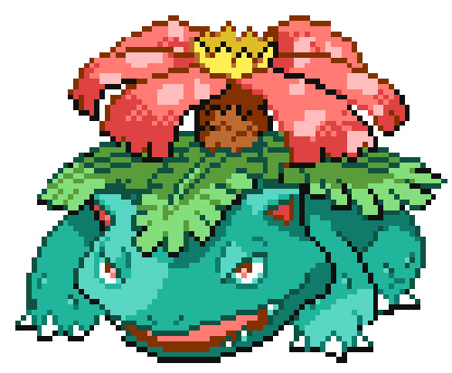

-
Bulbasaur #001

- Grama
- Veneno
Há uma semente de planta em suas costas desde o dia que este Pokemon nasce. A semente cresce lentamente.
-
Ivysaur #002

- Grama
- Veneno
Quando o bulbo em suas costas cresce, ele parece perder a capacidade de ficar em suas patas traseiras.
-
Venusaur #003
- Grama
- Veneno
Sua planta floresce quando está absorvendo energia solar. Ele fica em movimento em busca da luz solar.
-
Charmander #004

- Fogo
Tem preferência por coisas quentes. Quando chove, diz-se que o vapor jorra da ponta da cauda.
-
Charmeleon #005

- Fogo
Tem uma natureza bárbara. Na batalha, ele chicoteia sua cauda ardente e corta com garras afiadas.
-
Charizard #006

- Fogo
- Voador
Ele cospe fogo que é quente o suficiente para derreter pedregulhos. Pode causar incêndios florestais ao soprar chamas.
-
Squirtle #007

- Água
Quando retrai seu pescoço longo em sua concha, ele esguicha água com força vigorosa.
-
Wartortle #008

- Água
É reconhecido como um símbolo de longevidade. Se sua casca tem algas, esse Wartortle é muito antigo.
-
Blastoise #009

- Água
Ele esmaga seu inimigo sob seu corpo pesado para causar desmaios. Em um beliscão, ele se retirará dentro de sua concha.